发信人: wayneleaf (大熊家的葉小宝｜喜欢上海的理由), 信区: outdoor
标 题: 【合集】浙东游记有图有节操篇
发信站: 饮水思源 (2013年08月18日13:40:37 星期天), 站内信件
☆──────────────────────────────────────☆
lllxxl (lllxxl) 于 2013年05月07日11:29:45 星期二)
提到：
第一篇 那些年轻的脑残们
由于众多秒退党的出现以及探路活动的又一次夭折，脑残党们几乎倾巢出动。分包专
业户haocliff依旧抱怨包太轻了；ekc同学虽然发文的口气欠锯了些，一路上用血肉之躯给
同志们搭脚点还是很给力的；附脑残背影图一张。
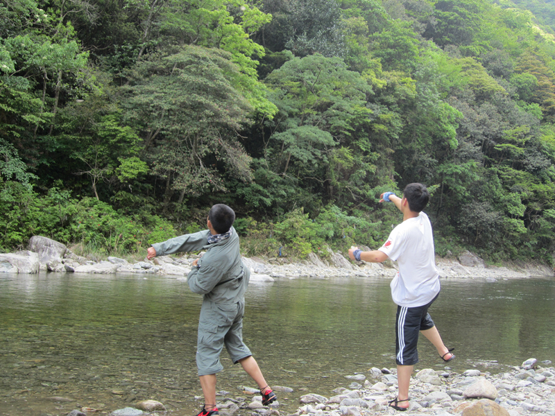 screen.width - 200){this.width = screen.width - 200}">
而身兼财务、队记二职的苍老师则跟我睡一个帐篷，众ds和宅男们不要羡慕我哟！附
苍老师啃黄瓜图一张。
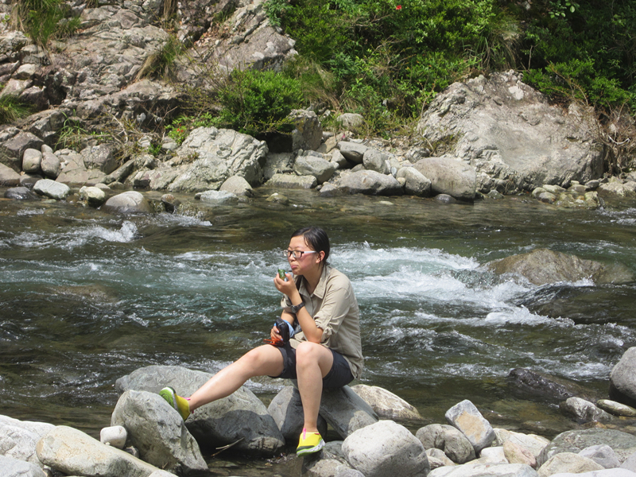 screen.width - 200){this.width = screen.width - 200}">
愿众脑残们好好学习技术，成为协会将来的顶梁柱。须知户外无小事，不要像副领队
先前那样不把打包当回事儿，你们对户外和装备的态度会影响到以后的会员和你们的小盆
友们，还请认真对待。
第二篇 那些年，我们一起做过的数学题
例1：领队手中的GPS显示，第一段上坡水平距离240米，垂直上升高度100米，问坡度
多大？领队回答：ctg2.4
例2：wangsen同学要游到河的对岸去，已知他的速度为0.5m/s，水速为1.5m/s，河宽
3米，求问，对岸同学应在下游几米远处等他？

例3：旦旦队伍共30人和20个包，已知他们的充气艇一次能运2名同学和1个登山包，来
回一次需要2分钟，请问他们过河需要几分钟？（不考虑划船队员的休息时间）
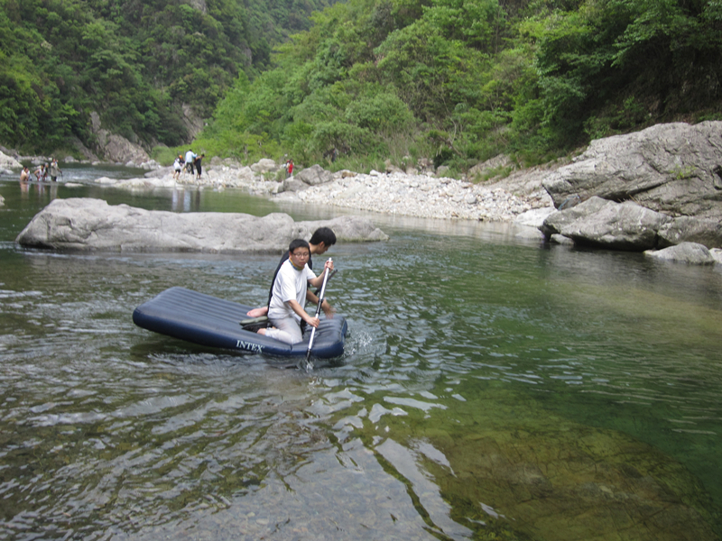 screen.width - 200){this.width = screen.width - 200}">
第三篇 那些娇羞的妹子们
这次的妹子很给力，没有一个走搓掉。准备会的时候看到yanhao拐了个妹子过来，乍
一看我还以为是大一的，结果竟然是研一的逆生长妹子……这次的男女比例之和谐让旦旦
的队伍感叹：“这不科学，这么多女生怎么会是交大的？！”废话不多说，直接上图吧。
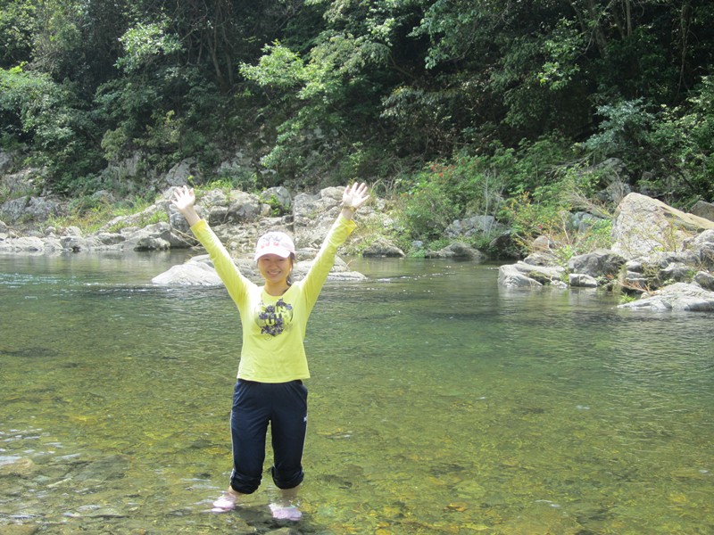 screen.width - 200){this.width = screen.width - 200}">
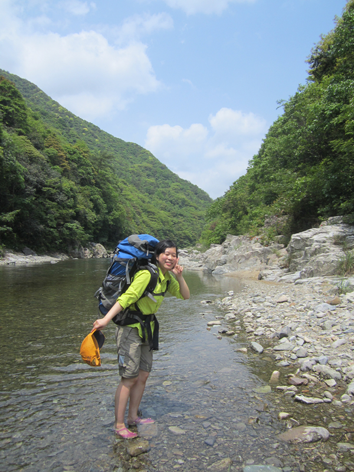 screen.width - 200){this.width = screen.width - 200}">
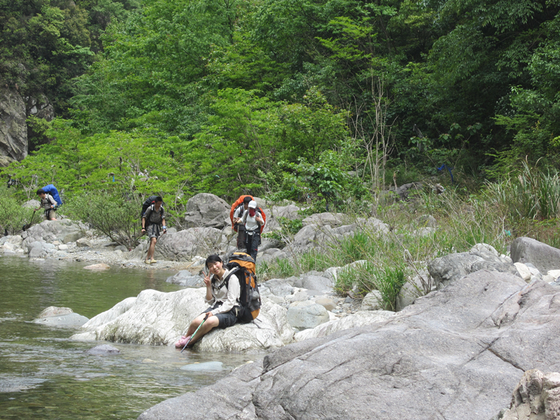 screen.width - 200){this.width = screen.width - 200}">
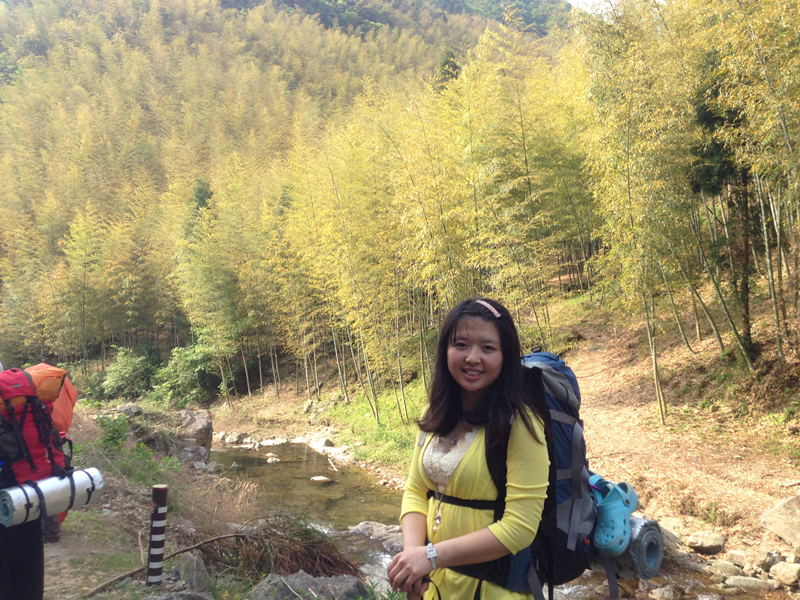 screen.width - 200){this.width = screen.width - 200}">
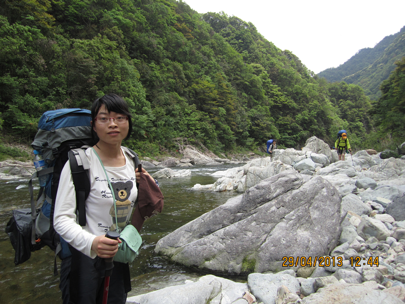 screen.width - 200){this.width = screen.width - 200}">
第四篇 那些风骚的汉子们
不可否认协会的汉子们真是各具情态。松哥羡慕yanhao的胸，yanhao称赞松哥的腰，可见
长期以来他二人各取所需十分和谐。至于瑞叔及gxysina那修长的腿则更不用多说，可惜瑞
叔这次走在队伍最后完全没有机会牵妹子的手这真是让人引以为憾。罗太是当之无愧的白
富美，阳光下的罗太简直白得发亮，我绝不承认这是曝光过度造成的。

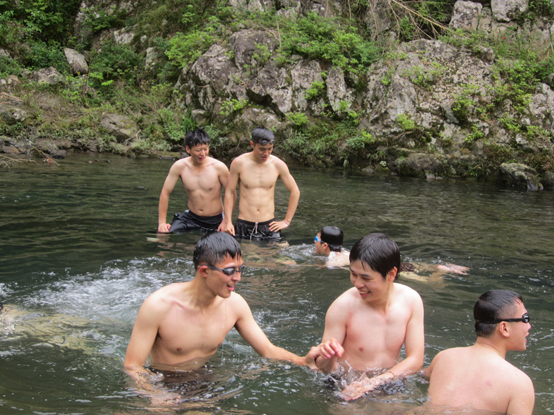 screen.width - 200){this.width = screen.width - 200}">
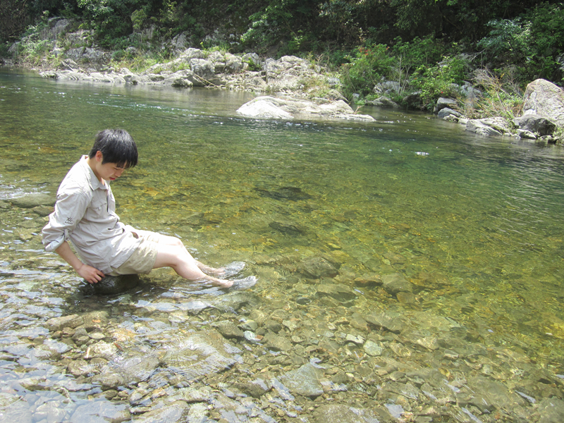 screen.width - 200){this.width = screen.width - 200}">
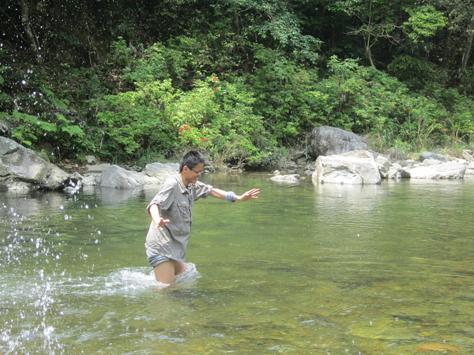 screen.width - 200){this.width = screen.width - 200}">
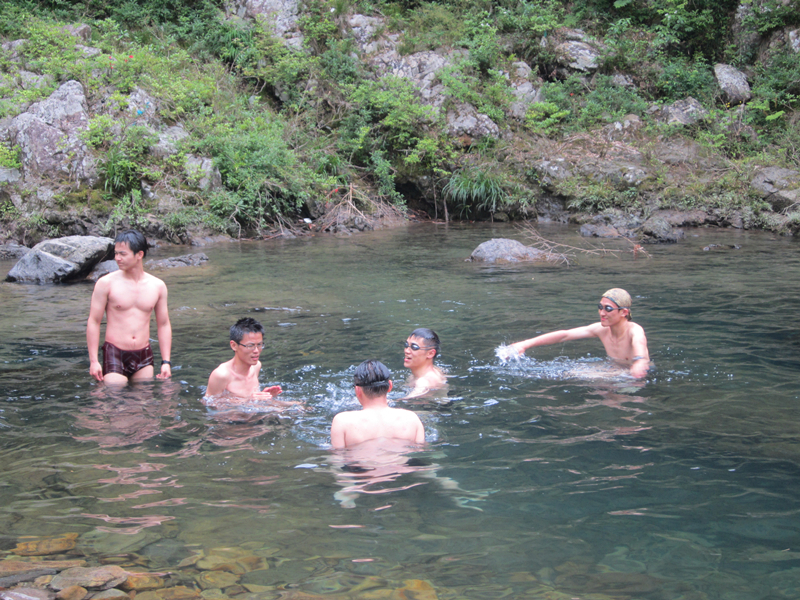 screen.width - 200){this.width = screen.width - 200}">
附送几张照片。
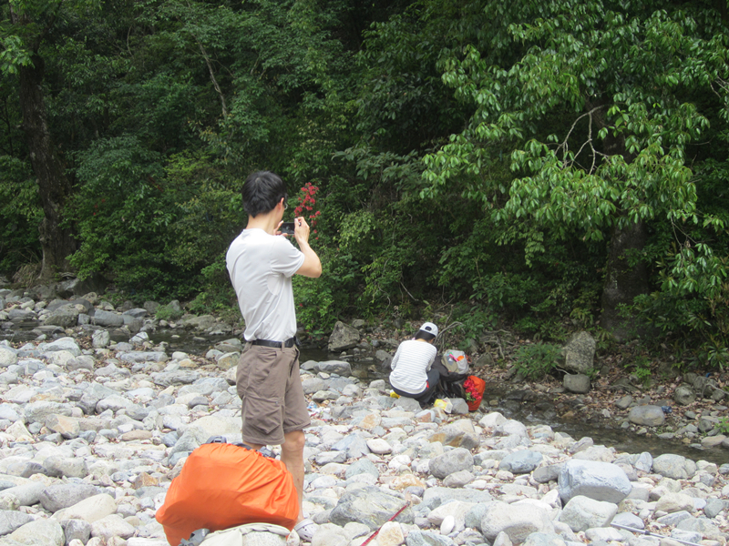 screen.width - 200){this.width = screen.width - 200}">
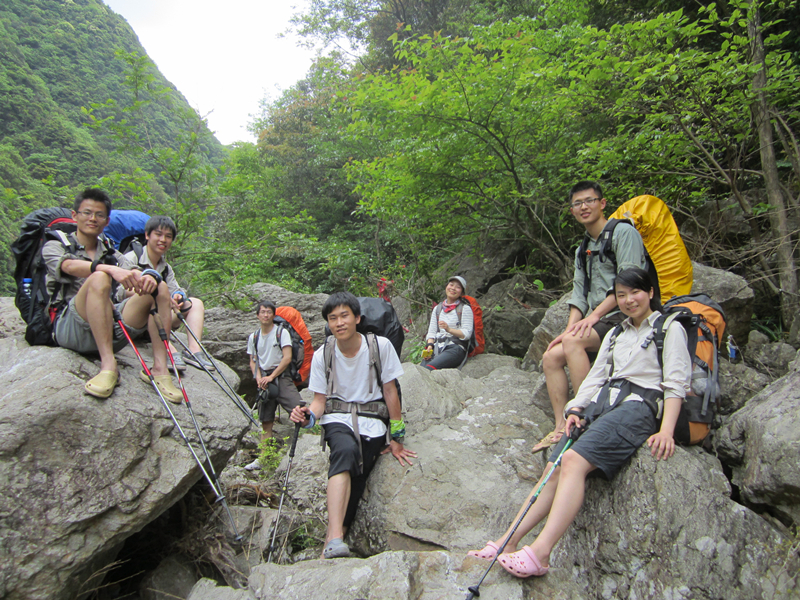 screen.width - 200){this.width = screen.width - 200}">
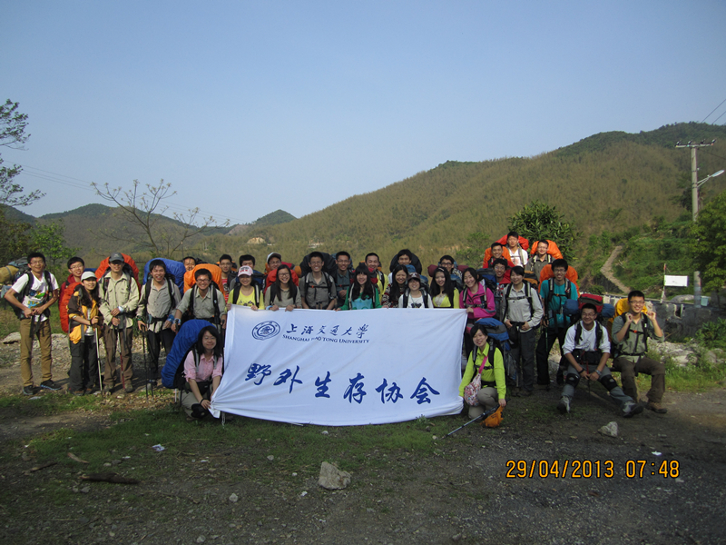 screen.width - 200){this.width = screen.width - 200}">
注：部分图片盗自苍老师和jiangkailun同学。
|